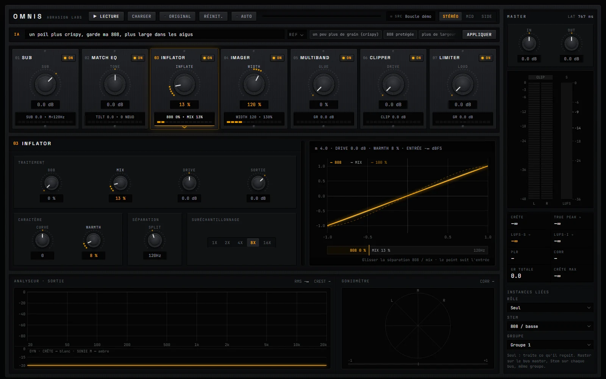

Loudness
LUFS court terme et intégré, true peak, PLR, crête maximale : de quoi viser juste pour chaque plateforme.
abrasion labs · mastering
Toute la chaîne de mastering dans un seul plugin : sept modules, du sub au limiteur, des écrans de mesure pour voir ce que tu entends, et une IA à qui tu décris le son que tu veux.
Un châssis, trois étages : le rack des modules, le module ouvert en grand, et les écrans. La colonne master tient toute la hauteur.

Sept modules, dans l’ordre où le son les traverse. Chacun se coupe d’un clic pour entendre ce qu’il apporte.
Garde le bas propre : mono sous la fréquence choisie et niveau du sub.
21 points en mid / side, à phase linéaire, plus un tilt global.
Densité et présence : courbe, drive, warmth, et une séparation qui protège la 808.
Largeur stéréo réglable, pour ouvrir le haut sans fragiliser le bas.
Compression en 4 bandes pour coller le mix (glue).
Trois modes, dur, doux ou diode, avec plafond et genou.
Le dernier mot : volume final et plafond de sortie.
03 / demande à l’IA
Pas besoin de connaître le nom des réglages. Écris ce que tu veux entendre : OMNIS le traduit en réglages sur les bons modules. Tu écoutes, puis tu appliques… ou pas.
Des raccourcis sont proposés pour aller vite : un peu plus de grain, 808 protégée, plus de largeur.
LUFS court terme et intégré, true peak, PLR, crête maximale : de quoi viser juste pour chaque plateforme.
Le spectre de sortie de 20 Hz à 20 kHz, avec RMS et facteur de crête.
Goniomètre, corrélation, et écoute séparée du mid et du side.
Le bouton ORIGINAL fait entendre le son sans traitement, pour juger à l’oreille.
De 1× à 16× sur les modules qui saturent, pour des aigus sans repliement.
Rôle Seul, Stem ou Master et un numéro de groupe : un OMNIS sur chaque bus et un sur le master travaillent ensemble.
Téléchargement immédiat, clé de licence par e-mail, licence pour toi sur trois appareils, mises à jour de la version achetée incluses.
En dernier sur ton bus master, en rôle Master. Pour aller plus loin, place aussi un OMNIS en rôle Stem sur chaque bus (808, voix, drums…) avec le même numéro de groupe.
Non. Elle propose des réglages ; c’est toi qui appliques. Le bouton ORIGINAL permet toujours de comparer avec le son de départ.
Copie le fichier OMNIS.vst3 dans C:\Program Files\Common Files\VST3, puis relance la recherche de plugins dans ton logiciel. OMNIS apparaît dans les effets.
Trois appareils à toi. Tu peux en libérer un depuis ton compte ou depuis le plugin pour en activer un autre.
Le droit de rétractation ne s’applique plus une fois le téléchargement commencé, avec ton accord exprès au moment de l’achat. Si le plugin ne fonctionne pas comme décrit, la garantie légale de conformité s’applique. Détails dans les conditions générales de vente.